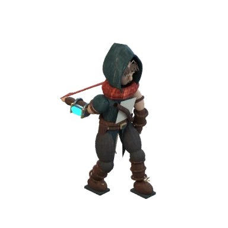

Work in progress toward game-ready animations. This prototype tests one canonical character source and planted-foot contacts. Its visual fidelity, remaining skills and complete playback acceptance are unfinished. It does not replace the live game hero.
Earlier generated animation study · Rig contact audit
One fixed model, one camera, twelve frames. The cyan emitter is attached to the anatomical right arm, following the concept front view. No image mirroring or per-frame crop alignment is used.
Two-bone inverse kinematics keeps planted feet on the floor. In-place movement metadata uses a 0.8-second cycle and 1.145833 model units per second. This proof has not yet passed final visual acceptance.
